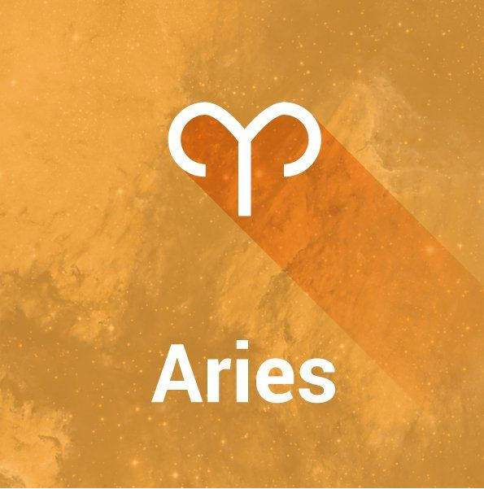
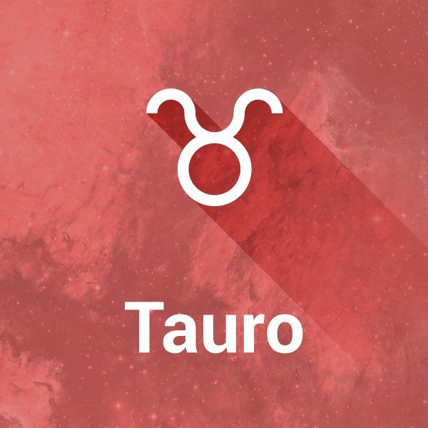
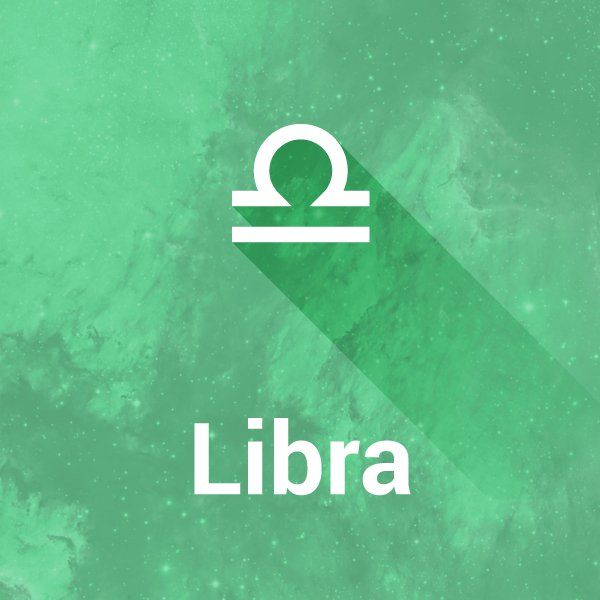

Mi Pagina De Signos Zodiacales
Aries
 se caracteriza por su energía, audacia y espíritu líder.
Tauro
es un signo de tierra conocido por su estabilidad, perseverancia y sensualidad, regido por Venus.
Géminis
Son comunicativos, sociables y disfrutan de la variedad, pero pueden ser indecisos, dispersos o aburrirse fácilmente.
Cáncer
naturaleza emocional, protectora y sensible.
Leo
seguro, carismático y líder nato, gobernado por el Sol.
Virgo
se caracteriza por ser práctico, perfeccionista y meticuloso.
Libra
 se caracteriza por su búsqueda de equilibrio, armonía y justicia.
Escorpio
Se caracteriza por su intensidad, magnetismo, pasión y profunda emocionalidad.
Sagitario
aventureras, optimistas y con una profunda sed de conocimiento y libertad.
Capricornio
ambición, disciplina, responsabilidad y naturaleza práctica.
Acuario
creativo, independiente e idealista, a menudo visto como visionario y futurista.
Piscis
se caracteriza por su profunda sensibilidad, empatía y creatividad.